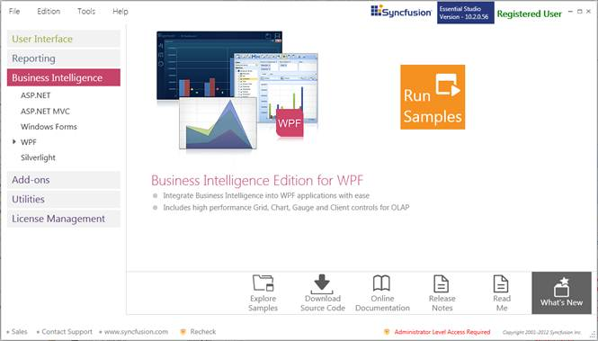
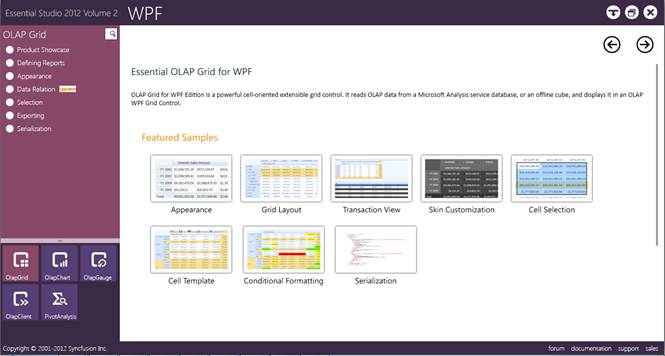

This section covers the location of the installed samples and describes the procedure to run the samples through the sample browser and online. It also provides the location of the source code.
Samples Installation Location
The OlapGrid samples are installed in the following location, locally on the disk:
Windows XP:
C:\Syncfusion\Essential Studio<version number>\BI\WPF\OlapGrid.WPF\Samples\
Windows 7/Vista:
C:\Users\<User Name>\AppData\Local\Syncfusion\EssentialStudio\Essential Studio<version number>\BI\WPF\OlapGrid.WPF\Samples
Viewing Samples
To view the samples, follow the steps given below:
1. Click StartàAll ProgramsàSyncfusionàEssential Studio <version number> àDashboard.

Figure 2: Syncfusion Essential Studio Dashboard BI
2. In the Dashboard window, click Run Samples for WPF under BI Edition. The BIWPF Sample Browser window is displayed.
 Note: You can view the samples in any of the following three
ways:
Note: You can view the samples in any of the following three
ways:
· Run Samples-Click to view the locally installed samples.
· Online Samples-Click to view online samples.
· Explore Samples-Explore BI WPF samples on disk.

Figure 3: BI WPF Sample Browser
3. Select any sample and browse through the features.
Source Code Location
The default location of the OLAP Grid source code is:
[System Drive]:\Program Files\Syncfusion\Essential Studio\[Version Number]\BI\OlapGrid.WPF\Src